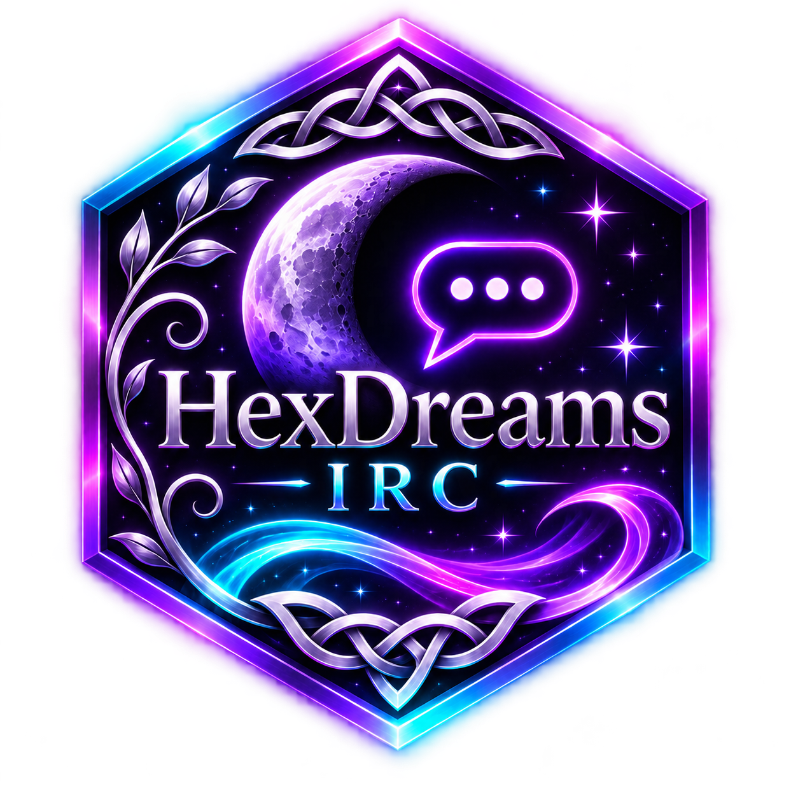

✦
Bienvenido a HexDreams IRC
Un lugar para todas tus conversaciones.
HEXDREAMS IRC · WINDOWS
La conversación empieza aquí.
Tus redes, tus salas, tu gente.
Un espacio tranquilo para conectar.
◈ Conexiones TLS▤ Varias redes◌ Mensajes privados

HexDreams IRCUn lugar para todas tus conversaciones.
Tus redes, tus salas, tu gente.
Un espacio tranquilo para conectar.